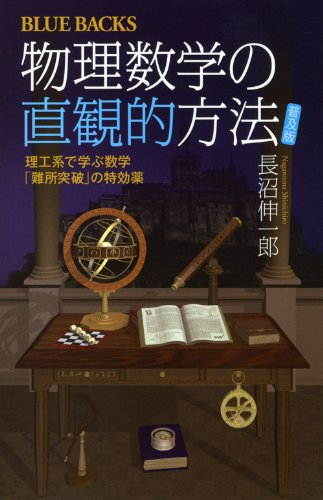
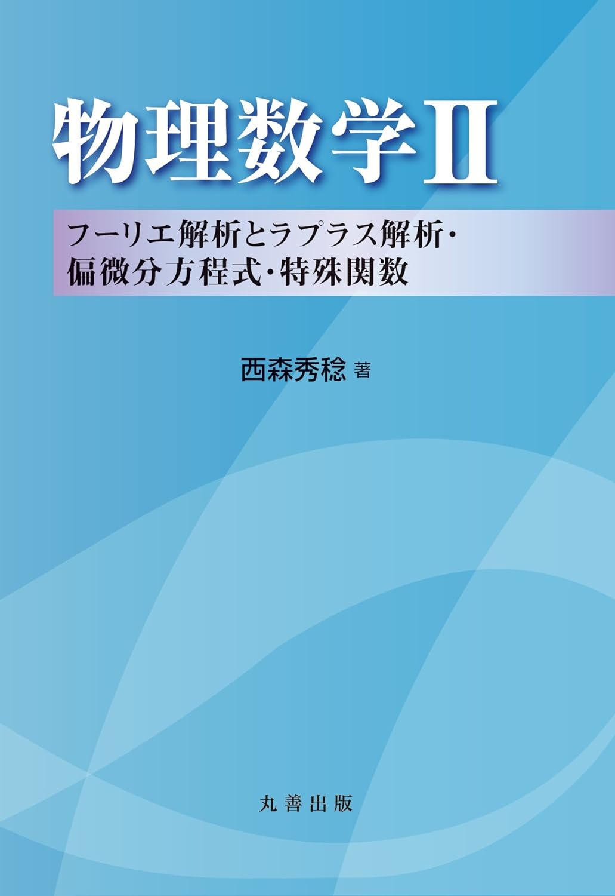
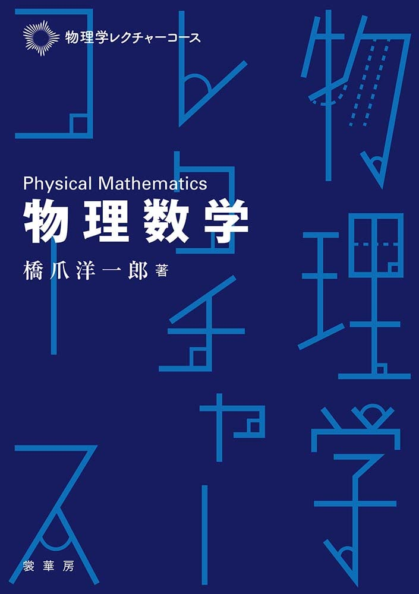

物理数学
物理に用いられる数学について書かれた書籍を紹介します。

物理数学の直観的方法 長沼伸一郎著
「元祖！わかりやすく噛み砕かれた理工系図書」のイメージがある有名な１冊。良い意味で癖のある説明が多いので、標準的な教科書と合わせてもっておきたい。ネット上だとこの本を酷評する声をたまに見かけるが、それは大抵この本の一部の内容が受け入れられないというもの。悪いところじゃなくて良いところを見ろや。

物理数学II 西森秀稔著
物理で必要となるフーリエ解析やラプラス変換、偏微分方程式、そして特殊関数について基本的なことが丁寧に解説されている教科書。これの本文と途中の問題を自分で手を動かしながら読み進めることで確実な力が身につく。特に特殊関数は必ず自分の手で計算を進めること。ちなみに物理数学I(古賀昌久著)のほうは複素関数論であり、本書と直接的なつながりはないので本書だけで読むことができる。

物理数学 橋爪洋一郎著
ヨビノリたくみとQuizKnock須貝が編集サポーターを務める物理学レクチャーコースから 出ている物理数学の教科書。説明のための大胆さと数学的な厳密さが絶妙な配分でマッチしており、正直嫉妬しました。